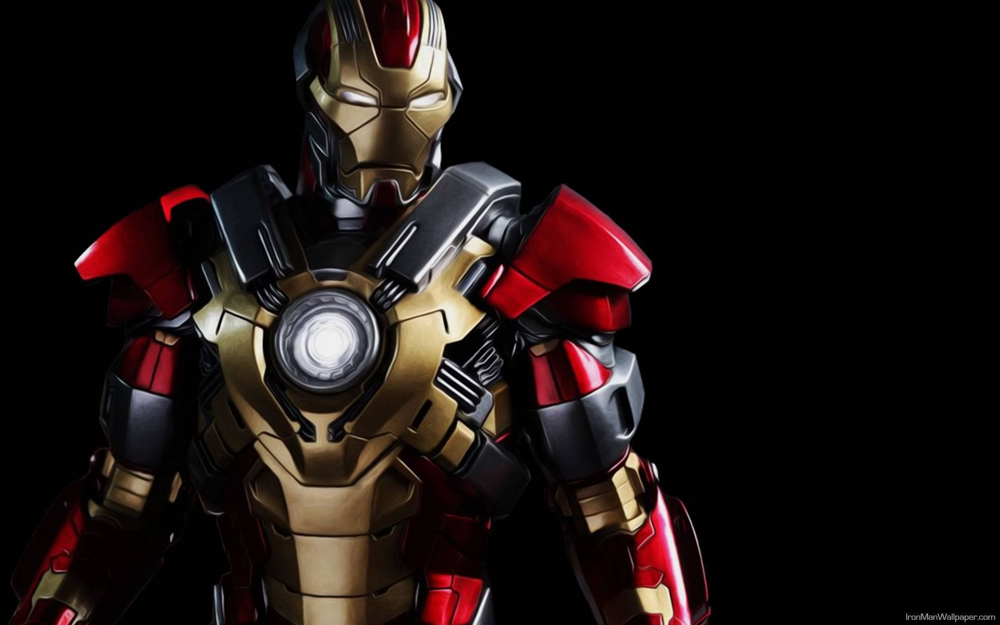
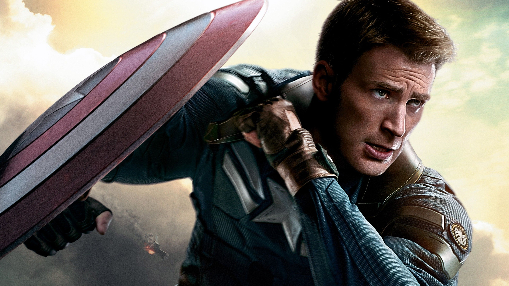
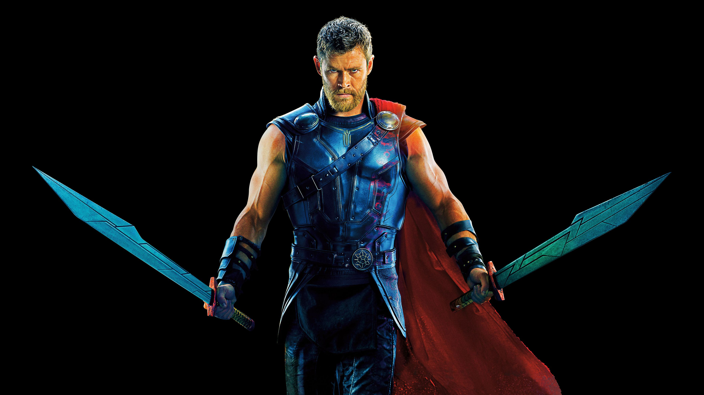
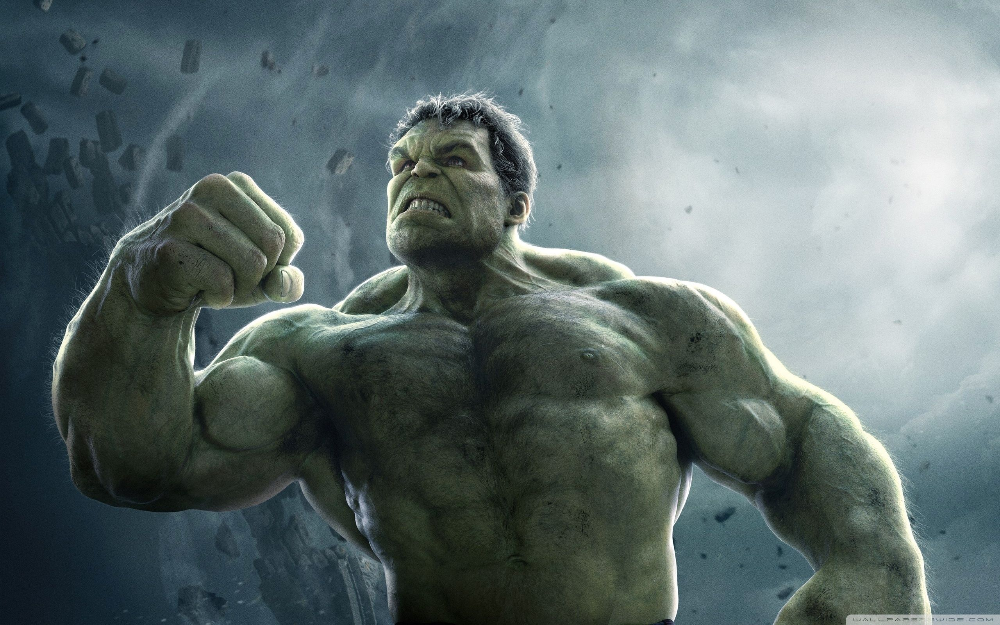

Avengres is a team of super heroes which is formed to protect Earth from alien invation. This team is formed initially by Nick Fury.
Here are the few people who are the main part of this team.
Iron Man

Tony Stark, who has inherited the defense contractor Stark Industries from his father Howard Stark, is in war-torn Afghanistan with his friend and military liaison, Lieutenant Colonel James Rhodes, to demonstrate the new "Jericho" missile. After the demonstration, the convoy is ambushed and Stark is critically wounded by amissile used by the attackers: one of his company's own. He is captured and imprisoned in a cave by a terrorist group called the Ten Rings. Yinsen, a fellow captive doctor, implants an electromagnet into Stark's chest to keep the shrapnel shards that wounded him from reaching his heart and killing him. Ten Rings leader Raza offers Stark freedom in exchange for building a Jericho missile for the group, but he and Yinsen know that Raza will not keep his word.
Captain America

In New York City in 1943, Steve Rogers
is rejected for World War II military recruitment due to his various health and physical
problems. While attending an exhibition of future technologies with his best friend, Sgt.
James "Bucky" Barnes, Rogers again attempts to enlist. Overhearing Rogers' conversation with
Barnes about representing his country in the war, Dr. Abraham Erskine allows Rogers to enlist.
He is recruited into the Strategic Scientific Reserve as part of a "super-soldier" experiment
under Erskine, Colonel Chester Phillips, and British agent Peggy Carter. Phillips is unconvinced
by Erskine's claims that Rogers is the right person for the procedure but relents after seeing Rogers
jump on a grenade to save his comrades, unaware that it is a test. The night before the treatment,
Erskine reveals to Rogers that Schmidt underwent an imperfect or unready version of the procedure and
suffered permanent side-effects.Thor

In 965 AD, Odin, king of Asgard, wages war against
the Frost Giants of Jotunheim and their leader Laufey, to prevent them from conquering the nine realms
, starting with Earth. The Asgardian warriors defeat the Frost Giants in Tønsberg, Norway, and seize the source of their power, the Casket of Ancient Winters.Hulk

During the experimental detonation of a gamma bomb,
scientist Robert Bruce Banner saves teenager Rick Jones who has driven onto the testing field; Banner
pushes Jones into a trench to save him, but is hit with the blast, absorbing massive amounts of gamma
radiation. He awakens later seemingly unscathed, but that night transforms into a lumbering grey form.
A pursuing soldier dubs the creature a "hulk".[43] Originally, it was believed that Banner's transformations
into the Hulk were caused by sunset and undone at sunrise, but later, after Rick witnessed Banner turn into Hulk
at daytime following a failed attempt by Ross' men to shoot the Hulk into space, it was discovered to be caused by
anger. Banner was cured in The Incredible Hulk #4, but chose to restore Hulk's powers with Banner's intelligence. The
gamma-ray machine needed to affect the transformation-induced side effects that made Banner temporarily sick and weak
when returned to his normal state.Black Widow
* Hawkye
*Vision
*Wanda
*Doctor Strange
*Spider Man
*Ant man
*Black Panther

Avengres
These are some famous dilouges in MCU
Click on the below link to goto Marvel Cinematic Universe
MCU